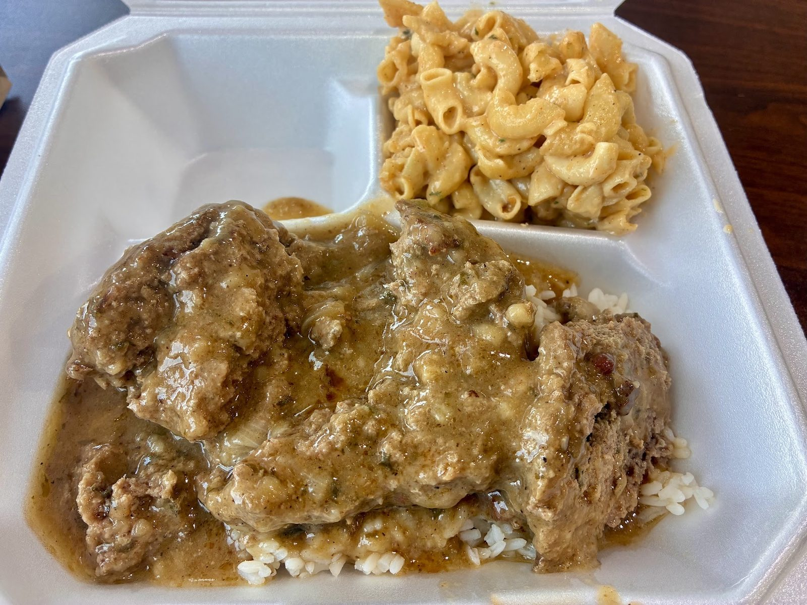

Fried catfish plate
Seasoned and crunchy. Plates come with two sides. Add corn bread.
Soul food & Cajun · Converse, TX
Fried catfish, red beans and rice, shrimp po boys. Hot, plentiful, inside a gas station on FM 78.

Don't let the gas station fool you
Plates worth ordering.
Seasoned and crunchy. Plates come with two sides. Add corn bread.

Shrimp po boy with large shrimp. Catfish and hot sausage po boys are on the board too.

Seafood gumbo is on the daily board.

Each comes with 2 sides
Each comes with 1 side


4.5 ★ · 229 Google reviews
GUEST CHECK№ 1This restaurant is AUTHENTIC New Orleans cuisine. You can hear the accent in the owner's voices. The food is phenomenal I had a shrimp po boy. Shrimp were large and a good amount that were falling out of the sandwich. It was great. I'll go back once a week...
GUEST CHECK№ 2Don't let the gas station fool you. This is one of the best soul food restaurants I have been to in San Antonio. The food was absolutely delicious, piping hot and a huge portion. You get a huge bang for your buck. I ordered the fried catfish and it was perfectly seasoned and crunchy. They don't offer collard greens on Monday but I plan to come back and try them!
GUEST CHECK№ 3Soul food at its finest in my opinion. Been twice in two days and will go tomorrow for lunch! First day I had the fish and shrimp combo with red beans and rice and the cajun mac and cheese. I put my fork down after each bite to savor the flavor. Today I had the fried pork chops with greens and red beans. I was gnawing on the bones! I didn't realize it was in a gas station but dont let it throw you off.

Since the first pot of coffee
A counter inside a gas station, a couple of tables, a bright mural wall and a kitchen that cooks everything to order.
New Orleans in the voices and the cooking. Call ahead and we'll time your order to come out hot when you arrive.
Slide on in
9175 FM78, Converse, TX 78109
Inside a gas station, with a couple of tables. Call ahead. Greens Tuesday, Thursday, Saturday.